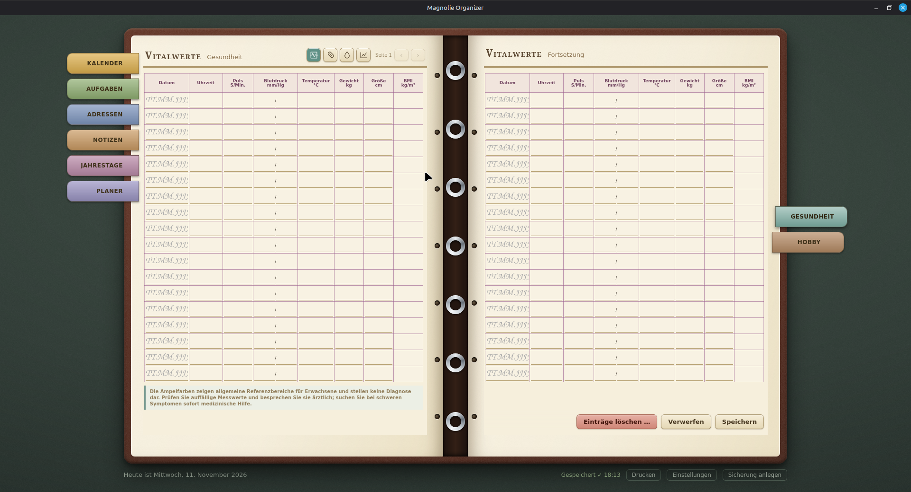
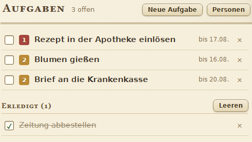

Alltag und Familie
Termine, Aufgaben, Kontakte und persönliche Notizen zusammen organisieren. Mit der vertrauten Optik eines aufgeschlagenen Organizers.
Kalender, Aufgaben, Kontakte und Notizen – in einem Organizer mit vertrauter Buchoberfläche und lokaler Datenhaltung.
Kostenlos. Open Source. Uneingeschränkt nutzbar.
20 Sprachen. Linux als Flatpak, AppImage, DEB und RPM. Windows. macOS-Beta.

Seiten, Register und Ringbindung. Eine vertraute Umgebung für das, was du im Blick behalten möchtest.


Termine planen und den Tag überblicken. Auf Wunsch mit Wetter, Feiertagen und Ferien. Die Buchoberfläche bringt die Wochenplanung in eine vertraute Form.
Aufgaben sammeln, Prioritäten erkennen und Erledigtes abhaken. So bleiben die nächsten Schritte übersichtlich.
Messwerte dokumentieren, den Medikamentenplan aufbewahren und Übersichten ausdrucken. Die Aufnahme zeigt die leere Vitalwerttabelle.
Termine, Aufgaben, Kontakte und persönliche Notizen zusammen organisieren. Mit der vertrauten Optik eines aufgeschlagenen Organizers.
Messwerte und den persönlichen Medikamentenplan übersichtlich festhalten. Mit Verlaufsgrafiken, druckbaren Übersichten und mehreren Notfallkontakten in den Kontaktkarten.
Magnolie Notes auf Android erfasst Zeiten für Arbeit, Meetings oder andere Tätigkeiten – mit Pausen, Korrekturen und druckbarer Monatsübersicht.
Kontakte in Gruppen ordnen, ausgewählte Kontakte als ODS-Liste ausgeben und Briefe für LibreOffice Writer vorbereiten.
Notizbücher mit Bildern und PDF-Anhängen durchsuchen. Gedanken am Desktop auch als Zeichnung oder Skizze festhalten.
Kalender und Kontakte mit passenden CalDAV- und CardDAV-Diensten verbinden, etwa Nextcloud oder Baïkal.
Magnolie setzt auf lokale Dateien. Der primäre Datenbestand bleibt auf deinen Geräten; ein Datenaustausch lässt sich ergänzen.
Die Gestaltung erinnert an einen klassischen Papier-Organizer. Kalender, Aufgaben, Kontakte und Notizen finden hier einen gemeinsamen Platz.
Die Programmquellen stehen unter GPL-3.0-or-later. Du kannst sie einsehen und das Projekt durch Fehlerberichte, Übersetzungen oder Beiträge unterstützen.
Importmöglichkeiten für Kalender, vCards, Lotus-Organizer-Daten und verbreitete Notizexporte helfen beim Einstieg.
Notizen, Aufgaben und Zeiterfassung auf deinem Smartphone. Zeiten für Arbeit, Meetings oder andere Tätigkeiten mit Pausen und Monatsübersicht festhalten. Der Abgleich mit dem eigenen Organizer ist optional und wird auf beiden Geräten freigegeben. KDE Connect ergänzt separat unterstützte Smartphone-Funktionen.
Magnolie spricht auch deine Sprache. Diese Oberflächensprachen sind im Projekt vorhanden:
Alle Schaltflächen führen zu den offiziellen Veröffentlichungen. Wähle dort das passende Paket für dein System.
Für zahlreiche Linux-Distributionen
Flatpak, AppImage, DEB und RPM: Wähle das passende Paket für deine Distribution und Prozessorarchitektur.
Linux-Pakete ansehenWindows 10 / 11 · 64 Bit
Als Installationsprogramm oder portable ZIP. Die passende Ausgabe findest du bei den aktuellen Veröffentlichungen.
Windows-Pakete ansehenBeta · Intel & Apple Silicon
Der Mac bekommt sein eigenes Kapitel. Eine erste Beta ist verfügbar; Funktionsumfang und Testhinweise stehen im Beta-Bereich.
macOS-Beta ansehenAndroid 8.0 oder neuer
Die separate App für Notizen, Aufgaben und Zeiterfassung. Auf F-Droid oder als APK beim Projekt erhältlich.
Magnolie Notes auf F-Droid APK beim ProjektLinux-Hinweis: Das normale DEB ist das Hauptprogramm – auch für KDE Plasma. Das KDE-Zusatzpaket ist nur für die optionale Anbindung vorhandener KDE-Kalender und -Adressbücher gedacht.
Ja. Magnolie Organizer ist kostenlos erhältlich. Die Programm- und Handbuchquellen stehen unter GPL-3.0-or-later; einzelne mitgelieferte Ressourcen haben eigene Lizenzbedingungen.
Magnolie bietet einen optionalen verschlüsselten Austausch mit gekoppelten Geräten. Der Magnolienbaum kann freigegebene Inhalte über ein lokales Netz, VPN oder einen eingerichteten Fernendpunkt austauschen. Einrichtung und Funktionsumfang stehen in den Projektunterlagen.
Die Projektbeschreibung nennt Importe für Kalender, vCards, Lotus-Organizer-Daten und verbreitete Notizexporte. Prüfe das konkrete Format und die Hinweise im Handbuch, bevor du deinen Bestand umziehst.
Magnolie Notes ist eine separate Begleitapp für Notizen und Aufgaben mit zusätzlichen optionalen Integrationen. Sie hat einen eigenen Funktionsumfang und ist kein identisches Abbild der Desktop-Anwendung.
Ein kurzer Filmeinblick und eine gut lesbare Broschüre zeigen, was Magnolie im Alltag kann.
Die Videos zeigen echte Produktbilder mit gut lesbaren Texteinblendungen. Die Broschüren gibt es auf Deutsch und Englisch.